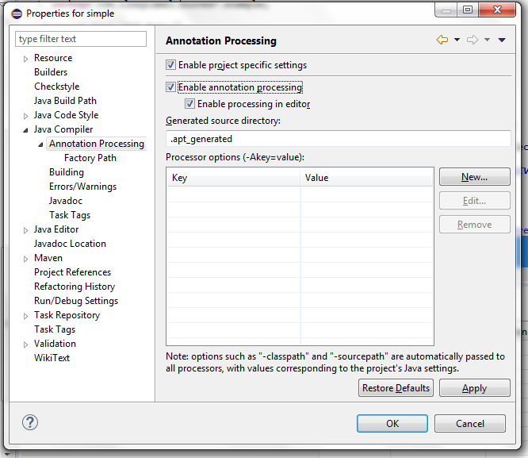
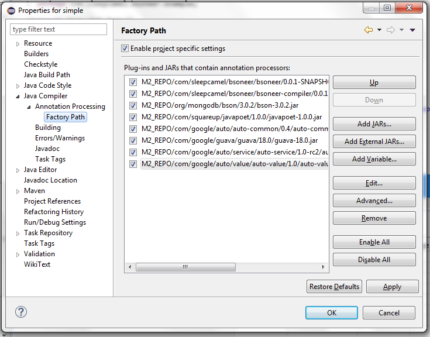
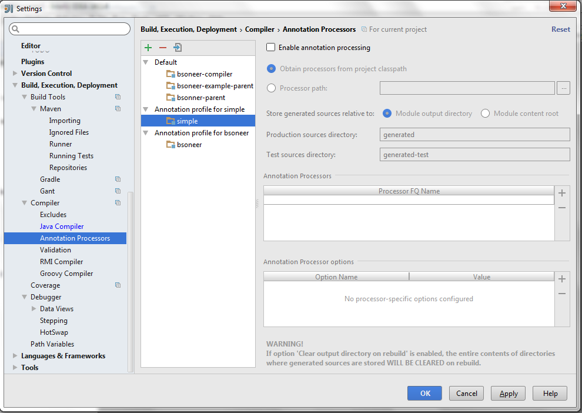

Bsoneer
Mongo 3.0 java library to generate codecs for existing beans
Introduction
The new MongoDB Java Driver brings the new org.bson.Bson, org.bson.codecs.Codec and org.bson.codecs.CollectibleCodec interfaces. There are several frameworks and libraries for runtime POJO mapping, but, isn't it better to make use of the new interfaces and annotation-processing to generate specific mapping codecs at compile-time and reduce POJO mapping on runtime?
That's were Bsoneer comes into play. Just by annotating your POJO with the @Bsonee annotation, a specific CollectibleCodec for that POJO is generated to help with its encoding/decoding to BSON.
CodecProvider is generated to provide the generated Codecs, a registry helper BsoneeCodecRegistry to ease codec registration to Mongo and BsoneeBson to get a Bson from a POJO.
Using Bsoneer
We'll demonstrate Bsoneer usage by building a people registry. For complete sample code that you can compile and run, see Bsoneer's people registry example.
Declaring Our POJO
@Bsonee()
public class Person {
String name;
private String lastName;
private Date date;
private GrowthStatus growth;
protected Person() {}
public Person(String name, String lastName, Date date, GrowthStatus growth) {
this.name = name;
this.lastName = lastName;
this.date = date;
this.growth = growth;
}
public String getName() {
return name;
}
public String getLastName() {
return lastName;
}
public void setLastName(String lastName) {
this.lastName = lastName;
}
public Date getDate() {
return date;
}
public GrowthStatus getGrowth() {
return growth;
}
public void setDate(Date date) {
this.date = date;
}
public void setGrowth(GrowthStatus growth) {
this.growth = growth;
}
@Override
public String toString() {
return name + " " + lastName;
}
}
The All Together
class PeopleRegistry {
public static void main(String[] args) {
// Initialize mongo client and database
...
// Register generated codecs to people collection database
MongoCollection collection = BsoneeCodecRegistry.to(database.getCollection("people", Person.class));
// Register Johnny!
collection.insertOne(new Person("John", "Doe", new Date(), GrowthStatus.ALIVE));
System.out.println("We have " + collection.count() + " person(s) registered");
collection.find().forEach(new Block() {
public void apply(Person t) {
System.out.println("Registered " + t);
}
});
...
}
}
Now that we registered the generated codecs, we run our people registry app. Fun :)
$ java -cp ... com.sleepcamel.bsoneer.example.PeopleRegistry We have 1 person(s) registered Registered John Doe
Bsonee - Codec generation options
Bsonee has the following options:
- value
- id
- keepIdProperty
- idGenerator
Let's use Foo to demonstrate how it is persisted using the different options:
@Bsonee()
public class Foo {
int a;
Foo(){}
}
is equivalent to:
@Bsonee(Foo.class)
public class Foo {
int a;
Foo(){}
}
and it will be persisted as: {_id:ObjectId(....),a:0}
Using id
@Bsonee(id="a")
public class Foo {
int a;
Foo(){}
}
will be persisted as: {_id:0}
Using id and keepIdProperty
@Bsonee(id="a", keepIdProperty=true)
public class Foo {
int a;
Foo(){}
}
will be persisted as: {_id:0,a:0}
Using idGenerator
public class FooIdGenerator extends IdGenerator<Foo> {
public Object generate(Foo instance){
return instance.name + " " +instance.lastName;
}
}
@Bsonee(idGenerator=FooIdGenerator.class)
public class Foo {
String name = "Some";
String lastName = "One";
Foo(){}
}
will be persisted as: {_id:"Some One"}
Bsonee Codec Registry
BsoneeCodecRegistry provides several utility methods to register generated codecs to a CodecRegistry
Register codecs to existing registry:
CodecRegistry oldRegistry = ... CodecRegistry newRegistry = BsoneeCodecRegistry.to(oldRegistry);
Register codecs to options builder:
MongoClientOptions.Builder mongoBuilder = ... BsoneeCodecRegistry.to(mongoBuilder);
Register codecs to a MongoDatabase:
MongoDatabase db = ... BsoneeCodecRegistry.to(db);
Register codecs to a MongoCollection:
MongoCollection collection = ... BsoneeCodecRegistry.to(collection);
Get a CodecRegistry with registered codecs:
CodecRegistry registryWithBsoneeCodecs = BsoneeCodecRegistry.registry();
Bsonee Bson
Bsoneer also generates the helper class BsoneeBson to help the user get a org.bson.conversions.Bson based on a POJO instance. To use it, just do:
Bson bsonValue = BsoneeBson.bson(person);
Bsoneer IdGenerator
Though MongoDB provides org.bson.codecs.IdGenerator interface, it's generate method does not use the pojo to be persisted. To help with that, Bsonner brings com.sleepcamel.bsoneer.IdGenerator class:
public abstract class IdGeneratorimplements org.bson.codecs.IdGenerator { private T instance; public void setEntity(T instance) { this.instance = instance; } public abstract Object generate(T instance); public Object generate() {return generate(instance);} }
This way the user can generate a POJO id based on it's current values
Bsoneer Compile-time Validation
Bsoneer does some validations when generating codecs:
Lack of a default constructor
This POJOs have a private default constructor or lack of a default constructor:@Bsonee()
public class Foo {
private Foo(){}
}
@Bsonee()
public class Bar {
Bar(String a){}
}
When compiling it, javac rejects those classes:
[ERROR] COMPILATION ERROR : [ERROR] Foo.java: Cannot generate code for 'Foo'. Class does not have a default constructor or it is private [ERROR] Bar.java: Cannot generate code for 'Bar'. Class does not have a default constructor or it is private
Fix the problem providing a non-private default constructor:
@Bsonee()
public class Foo {
public Foo(){}
}
@Bsonee()
public class Bar {
Bar(){}
Bar(String a){}
}
Id and IdGenerator
Bsonee declarations cannot have both an id property and an idGenerator. That would mean the _id is to have both the generated id from the idGenerator and the value obtained from the property marked as id
@Bsonee(id="a", idGenerator=CustomGenerator.class)
public class Foo {
int a;
public Foo(){}
}
This would result on the following output:
[ERROR] COMPILATION ERROR : [ERROR] Foo.java: Cannot generate code for 'Foo'. Cannot use id property and idGenerator at the same time.
To solve this, you should use either id or idGenerator, for example:
@Bsonee(id="a")
public class Foo {
int a;
public Foo(){}
}
Property to use as id not found
Bsonee verifies that the property marked as id is found on the POJO. For example:
@Bsonee(id="b")
public class Foo {
int a;
public Foo(){}
}
This would result on the following output:
[ERROR] COMPILATION ERROR : [ERROR] Foo.java: Id property not found
To solve this, you should use an existing property of the POJO:
@Bsonee(id="a")
public class Foo {
int a;
public Foo(){}
}
Id generator must have a default public constructor
When using @Bsonee(idGenerator=...), the provided idGenerator must have a public default constructor. This example:
@Bsonee(idGenerator=FooIdGenerator.class)
public class Foo {
int a;
public Foo(){}
}
public class FooIdGenerator extends IdGenerator {
FooIdGenerator(){}
@Override
public Object generate(Foo instance) {
return new ObjectId();
}
}
This would result on the following output:
[ERROR] COMPILATION ERROR : [ERROR] Foo.java: IdGenerator must have a default public constructor
Bsonee inside Bsonees without value
When using @Bsonees({@Bsonee(...)}), declared @Bsonee's must have a value(otherwise, bsoneer cannot know for which class it has to generate a codec for. This example:
public class Foo {
int a;
public Foo(){}
}
public class Bar {
int a;
public Bar(){}
}
public class App {
@Bsonees({@Bsonee(),@Bsonee(Bar.class)})
public static void main(String[] args) {}
}
This would result on the following output:
[ERROR] COMPILATION ERROR : [ERROR] App.java: @Bsonee inside @Bsoness must have a value
To solve this, make sure you provide the value inside @Bsonee when using @Bsonees:
public class App {
@Bsonees({@Bsonee(Foo.class),@Bsonee(Bar.class)})
public static void main(String[] args) {}
}
Download
↓ Latest JAR ↓ Latest Compiler JAR
You will need to include the Bsoneer JAR in your application's runtime. In order to activate code generation you will need to include the compiler JAR in your build at compile time.
The source code to the Bsoneer, its samples, and this website is available on GitHub.
Maven
<dependency> <groupId>com.sleepcamel.bsoneer</groupId> <artifactId>bsoneer</artifactId> <version>(insert latest version)</version> </dependency> <dependency> <groupId>com.sleepcamel.bsoneer</groupId> <artifactId>bsoneer-compiler</artifactId> <version>(insert latest version)</version> <optional>true</optional> </dependency>
Gradle
compile 'com.sleepcamel.bsoneer:bsoneer:(insert latest version)' compile 'com.sleepcamel.bsoneer:bsoneer-compiler:(insert latest version)'
IDE Configuration
Some IDEs require additional configuration in order to enable annotation processing.
Eclipse Configuration
-
Right click on your project in the Package Explorer. Head to Java Compiler → Annotation Processing and check "Enable project specific settings".
Ensure the other annotation processing settings are the same as shown below:

-
Expand the Annotation Processing section and select Factory Path. Check "Enable project specific settings" and then click "Add JARs…". Navigate to the project's
libs/folder and select the Butter Knife jar.
- Click "Ok" to save the new settings. Eclipse will ask you to rebuild your project to which you should click "Yes"
- Make sure that the
.apt_generated/folder is in your project root. It should contain files likeYOUR_POJOBsoneeCodec.java. If these files are not present trigger a clean build by selected Project → Clean. This folder and files should not be checked into revision control. - Lastly, under "Java Compiler", make sure that the Compiler compliance level is set to Java version 1.6 at minimum.
IntelliJ IDEA Configuration
If your project uses an external configuration (like a Mavenpom.xml) then annotation processing should just work. If not, try this:
Open IDEA's preference and navigate to Compiler → Annotation Processors. Check "Enable annotation processing".

Contributing
If you would like to contribute code you can do so through GitHub by forking the repository and sending a pull request.
When submitting code, please make every effort to follow existing conventions and style in order to keep the code as readable as possible. Please also make sure your code compiles by running mvn clean verify.
License
Copyright 2015 Sleepcamel Licensed under the Apache License, Version 2.0 (the "License"); you may not use this file except in compliance with the License. You may obtain a copy of the License at http://www.apache.org/licenses/LICENSE-2.0 Unless required by applicable law or agreed to in writing, software distributed under the License is distributed on an "AS IS" BASIS, WITHOUT WARRANTIES OR CONDITIONS OF ANY KIND, either express or implied. See the License for the specific language governing permissions and limitations under the License.